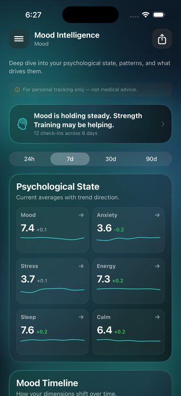

Track Your Energy. Find Out Why You're Tired.
You're tired but you don't know why. Is it sleep? Diet? Stress? A supplement you're taking? Your exercise routine — or lack of one? Stop guessing and start tracking. ReactLog finds the patterns your brain can't see.

You've tried everything and you're still exhausted
Persistent fatigue affects 1 in 3 adults worldwide, yet "why am I always tired" remains one of the most searched health questions on Google. The reason most people stay stuck is simple: they try solutions randomly instead of tracking systematically.
You've probably experimented with solutions one at a time. More sleep. Better diet. New supplements. More exercise. But without systematic tracking, you never discover what actually correlates with your higher energy levels.
Here's the truth: energy is affected by dozens of variables simultaneously. Sleep duration, sleep consistency, food choices, blood sugar timing, caffeine consumption, hydration, exercise type and timing, stress levels, supplements, medications, screen time exposure, social activity, weather, and sunlight all interact in complex ways. Your brain cannot process all these correlations. But data can.
When you systematically track your energy alongside the factors that might influence it, patterns emerge within 2-3 weeks. Suddenly you see exactly what gives you energy and what drains it—your personal energy equation, unique to your body and lifestyle.
The hidden factors affecting your energy
Energy levels depend on more than just sleep. Here's what actually influences your fatigue throughout the day:
Sleep Duration
Most adults need 7-9 hours. Too little sleep creates cumulative sleep debt. Too much can indicate depression or other health issues. Track duration to find your optimal range.
Sleep Consistency
Timing matters more than duration. Going to bed and waking at the same time ±30 minutes trains your body's natural rhythms. Irregular sleep patterns destroy energy even with adequate total sleep.
Food & Blood Sugar
Blood sugar swings cause afternoon crashes. High-glycemic foods spike then plummet. Stable combinations of protein, healthy fats, and complex carbs maintain steady energy throughout the day.
Caffeine Timing
Caffeine has a 5-6 hour half-life. Morning caffeine provides lift. Afternoon caffeine can disrupt sleep that night, causing next-day fatigue. Timing matters as much as quantity.
Hydration
Dehydration is one of the most overlooked fatigue causes. As little as 2% dehydration reduces physical and mental performance. Most people are chronically mildly dehydrated.
Exercise Type & Timing
Morning exercise energizes throughout the day. Intense evening exercise can disrupt sleep. Type matters—strength training, cardio, and stretching have different energy effects.
Stress Levels
Chronic stress elevates cortisol, disrupting sleep quality and depleting energy reserves. High-stress days predict lower energy and poorer sleep the following night.
Supplements & Medications
Some supplements boost energy; others induce fatigue. Medication side effects often include fatigue. Timing matters—magnesium at night helps sleep, but timing relative to meals affects absorption.
Screen Time
Blue light from screens suppresses melatonin production, delaying sleep onset and reducing sleep quality. Evening screen use causes next-day fatigue even if total sleep hours seem adequate.
Social Activity
Social connection energizes many people. Isolation drains energy. But for some, too much social activity causes stress fatigue. Track your personal pattern.
Weather & Sunlight
Seasonal changes and light exposure regulate circadian rhythms and vitamin D production. Lower sunlight exposure decreases energy and can trigger Seasonal Affective Disorder (SAD).
How it works in 3 steps
ReactLog's simple approach reveals your personal energy patterns without complexity.
Rate your energy daily
Quick check-ins, 1-3 times per day. Rate your energy level from 1-10. Morning, afternoon, evening—whatever works for your routine. Takes 10 seconds.
Simple ratings build the foundation. You're not writing essays. You're creating data points ReactLog learns from.

Log your inputs
Whenever you rate your energy, log what might affect it. Sleep hours, food eaten, supplements taken, exercise done, coffee consumed, stress level, time outdoors.
You don't need to log everything every time. ReactLog learns from the patterns in what you do track consistently.
Discover your equation
After 2-3 weeks of consistent tracking, ReactLog reveals your personal energy equation. Which specific factors most strongly correlate with your energy? What gives you energy? What drains you?
See exact correlations: Morning exercise raises your afternoon energy by 35%. Late-night caffeine reduces next-day morning energy by 2 points.

Patterns ReactLog users discover
These are real patterns users uncover through tracking. Your personal patterns may differ—that's the point.
Morning exercise before 10am correlates with 25% higher afternoon energy levels. Exercise timing matters as much as frequency. Afternoon exercise doesn't produce the same next-day boost.
Sleep consistency (same bedtime ±30 minutes) matters more than total sleep hours. Someone sleeping 6 hours consistently has better energy than someone sleeping 7-9 hours inconsistently.
Magnesium glycinate at night correlates with better next-day energy—but only when taken 2+ hours before bed. Taken right before sleep, it increases next-day grogginess.
Afternoon energy crashes correlate with high-carb lunches without protein or fat. A carb-only lunch spikes then crashes blood sugar. Adding protein and fat stabilizes afternoon energy.
Screen time after 8pm reduces next-day energy by an average of 1.5 points on a 10-point scale. This effect compounds with multiple nights of late-night screen use.
Hydration is a hidden energy driver most people underestimate. Drinking 2 liters of water daily correlates with 15% higher baseline energy. Dehydration sneaks in without awareness.
Stress levels two days prior predict current energy more reliably than immediate stress. High stress disrupts sleep quality that night, depleting energy reserves the following day.
Social activity energizes some, drains others. Tracking reveals your personal pattern. For introverts, solitude restores energy; social events deplete it. For extroverts, the opposite.
Your data stays yours
Your energy and health data stays on your phone. Period. No servers, no cloud, no data collection. ReactLog analyzes patterns entirely on-device. We never see your data, never share it, never sell it.
This is core to ReactLog. You're tracking intimate health information. It should never leave your device.
Frequently asked questions
Persistent fatigue has many causes: poor sleep quality, sleep inconsistency, blood sugar swings, dehydration, vitamin deficiencies, stress, sedentary lifestyle, medication side effects, hormonal imbalances, or underlying health conditions.
The key is systematic tracking. Most people try one solution at a time, never discovering what actually correlates with higher energy in their specific situation. Your fatigue might stem from sleep inconsistency. Your colleague's from blood sugar swings. Another person's from vitamin D deficiency. The only way to know is to track consistently and look for your personal patterns.
Rate your energy 1-3 times daily on a simple scale (1-10 works well). Morning, afternoon, and evening captures daily variation. Each rating takes about 10 seconds.
Simultaneously, log the factors that might influence your energy: hours slept, quality of sleep, meals eaten, supplements taken, exercise completed, caffeine consumed, stress level, time outdoors. You don't need perfect logging. Consistent tracking of a few key factors reveals patterns quickly. After 2-3 weeks, patterns emerge showing exactly what affects your energy.
Yes. Data shows that most people discover 2-3 specific factors that significantly affect their energy once they track consistently. Someone discovers that morning light exposure raises afternoon energy by 20%. Another finds that magnesium at specific times eliminates afternoon crashes. A third discovers that sleep consistency matters far more than sleep duration for their energy levels.
These discoveries can't happen without systematic tracking. Your brain detects obvious patterns, but misses subtle correlations and delayed effects. Data reveals what intuition cannot. Within weeks of tracking, most people identify 2-3 high-impact interventions unique to their body and lifestyle.
Consistency matters more than frequency or specific times. Morning, mid-afternoon, and evening works well for most people—it captures your energy across the full day and shows how different times vary.
But if you prefer different times, pick consistent times and stick to them. 7am, 1pm, and 7pm. Or 8am and 4pm. Or even just morning and evening. As long as you're consistent, ReactLog finds patterns. The frequency is less important than consistency. Daily tracking at consistent times trains your awareness and gives ReactLog the data it needs to find correlations.
Yes. ReactLog is free during Early Access. Create unlimited energy trackers, track as much as you want, access all analysis features—no paywalls, no premium tier, no hidden charges.
No account is required. Everything stays on your phone. Download it and start tracking today.
Related health trackers
Track other aspects of your health with ReactLog:
Find your energy equation. Download free.
Track your energy, discover what affects it, and feel better every day.
Download ReactLog